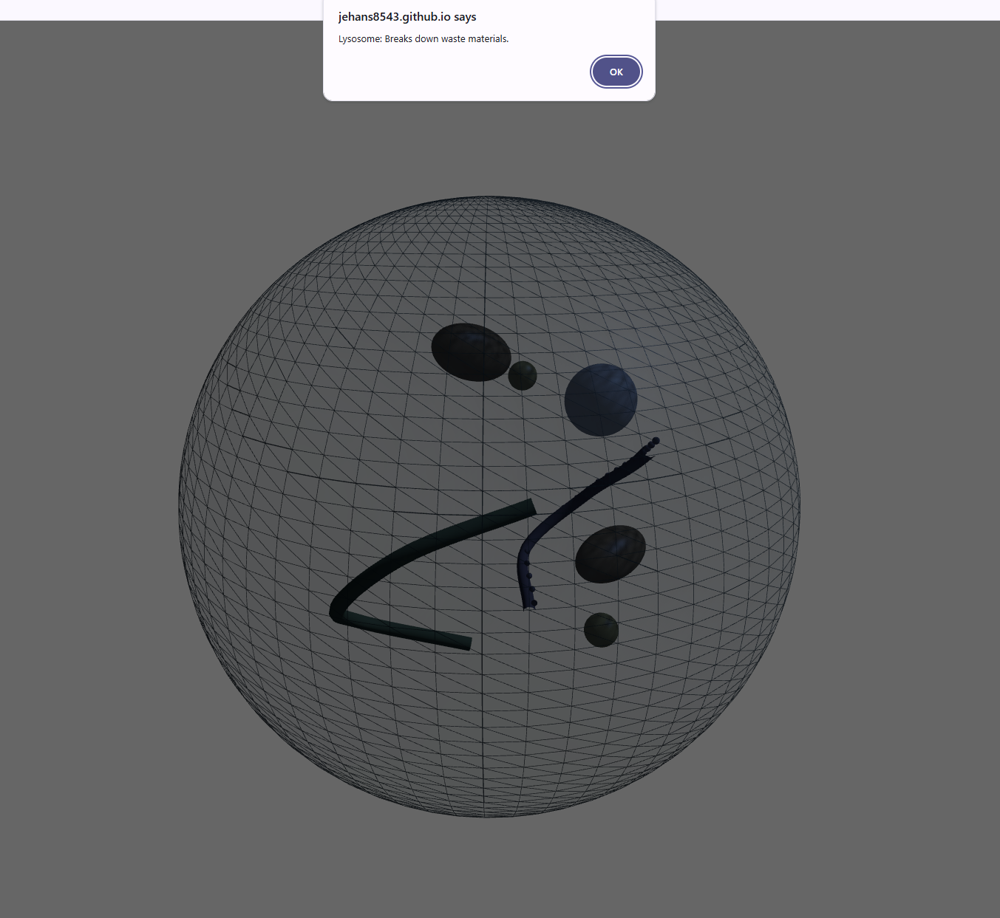

Last year, you may have seen my website about the government, well the reason why I did that project in the first place was because it was for my SEP 10 Freedom Project. Well this year, we have to do that all over again since we are now in SEP 11. Being a SEP student, no matter the grade, means that we have to create and complete a year-long freedom project based on everything we learned in that year. For the SEP 11 freedom project we had to make anything using a javascript interface, which was mainly achieved using our tool. Other than that, we would practically have to use what we learned in SEP 10 for our SEP 11 freedom project since javascript, HTML, and CSS often go hand in hand.Throughout the year we would work little by little on this project. As we finished the entirety of our SEP 11 course, we started to work on the freedom project everyday, but unlike last year I didn't utilize my time well and worked on my project at the last minute.
The contents of my freedom project consisted of an animal cell and its organelles. More specifically, it was a 3D model of an animal cell that would rotate and when you would click on an organelle a card would popup defining what the organelle is.
My project mainly consisted of my tool three.js (which was basically javascript) and a bit of HTML for the popup cards. Three.js is an open-source JavaScript library used to create and display animated, interactive 3D computer graphics directly inside a web browser. The entirety of my project relied on my tool three.js since it was a tool that would allow me to use 3D rendering to make the animal cell that I envisioned in my head to come to life. Another thing that I used for my project, as I mentioned earlier is the HTML, which was used to make the popup cards. Though some of it was used with basic javascript, when it came to it to pop up, the rest of it such as the design of it was used using HTML.
I faced a variety of challenges while creating my project, though I would say that I faced one large challenge which then led to me facing multiple small challenges along the way. The overall challenge that I faced this year with my freedom project is: procrastination and effort. Some might say that these are two separate problems, but for me I put them into one large umbrella term because my procrastination led to me putting in a lack of effort, while me knowing that I won't put effort in led to even more procrastination on my side. Which is why I believe that those two challenges fall under one umbrella term.
The reason why I say procrastination was one of my main challenges, is because I barely worked on my freedom project at all this year. When Mr. Mueller would give us time in class to work on our projects, I would often end up using that time for completing work for other classes. Junior year has been a stressful year for me, and I started to get my priorities all over the place, hence, my work and projects for SEP 11 were often neglected or done last minute. My SEP 11 freedom project is one of them. Every Monday during SEP, I would think that I have the time in the world to work on my project, but then May started approaching, meaning that the due date for my MVP was soon, and I hadn't had worked on anything. I was panicking, since I had yet to get started on my project. Therefore, the day before the MVP was due, I was able to submit an extremely raw MVP of the MVP version of my project. In my eyes my project looked hideous, and I felt extremely ashamed of it. Though I knew I couldn't be too upset about it since it's my fault that I didn't work on my project sooner. Part of me knew from the beginning that I wasn't going to try much for this project, thinking that I could get it down extremely quickly when I did work on it, which worsened my procrastination for this project even more. Though I was able to overcome this challenge in an unexpected way. Yes, I procrastinated, but I heavily regretted doing that. The consequences that my procrastination faced was that I was extremely embarrassed to show my project off. After experiencing that embarrassment (something that I never want to go through again), I now know that if I were to procrastinate on another big project again like this in the following years I'm going to suffer the same embarrassment, maybe even worse, all over again.
Effort was another big challenge that I had to overcome this year. Last year I ended off the year successfully, with me getting honorable mention on my SEP 10 Freedom project. I thought this year would be no different for me. Though I ended up getting a bit too cocky with myself, and was humbled immediately. Once we started our SEP 11 course, I felt so lost. I didn't know anything that we were learning, I could barely comprehend any of it. I just felt so behind in the class in general. I was also having an extremely hard time learning my tool, since it uses more advanced levels of javascript such as 3D rendering. It didn't help that no one else in my class wasn't using the same tool as me, so I couldn't ask anyone else for help. I felt so lost when it came to SEP and everything about it, so I sort of just gave up trying. I still did my work and everything for the grade, but I didn't necessarily understand everything that I was doing. I was able to understand homeworks and their assignments, but I struggled piecing it together in projects. Especially with the freedom project which had to piece everything that I learned in the year together. During the times that I had to work on my project, I just used basic code that nearly anyone can do if they utilized their resources that they had of three.js right. I didn't end up making anything spectacular with what I made this year. Which is why my project barely functions properly, for when you turn it a lot of the organelles disappear. And as I said in my challenge for procrastination, I suffered from extreme embarrassment when I had to show my project to others. And like I said before, I couldn't complain about the embarrassment since I was the one who gave up on myself and decided not to put in effort to be better. This whole freedom project was an eye opener to me. Talent, skill, and success don't come naturally if you put in the effort to do so. I wasn't proud of my project, and I want a project that I can say that I am proud of. If I want to do that, I would have to put in the effort. Which is an extremely important lesson that I learned this year.
My biggest takeaway from this challenge is overcoming demotivation. The reason why I say this is my biggest takeaway this year is because I was extremely demotivated this year, causing me to procrastinate, not put in effort, and just give up. Though during the project I didn't overcome my demotivation, rather I learned the consequences which were extreme embarrassment. I got lucky this year that I didn't face any worse consequences, but it caused me to open my eyes and realize that next time that I act like this I could face consequences like this. Hence, I now know despite how motivated I am, I got to put in effort in the things that I do, especially if it's something required or expected of me.
For my next steps I want to make up for all my lost time with this project and improve on it as much as I can. The first thing that I plan to do is remove all the bugs such as the organelles disappearing, the cards not being able to be clicked on, the coloring/ visual appearance of the project. The next thing that I would tackle is creating more organelles, and making the placement of the current ones that I have more accurate. The reason why I would change my project so drastically is so I can make it up to my past-self and prove that I can make something out of a javascript project.
Project Link